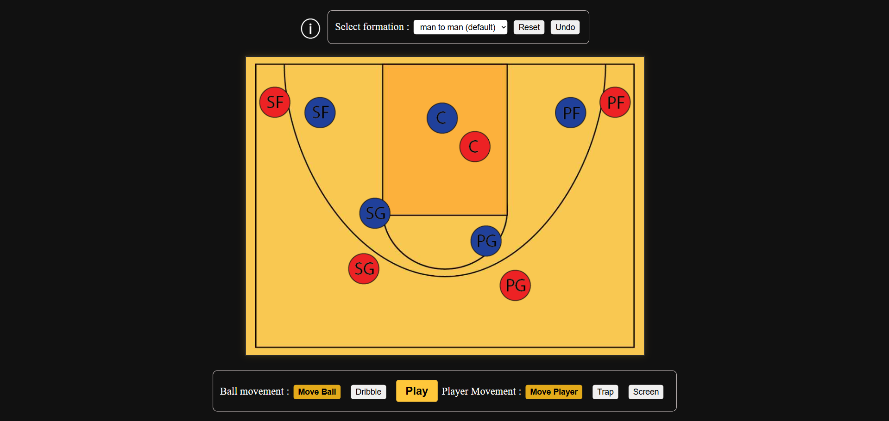
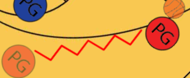
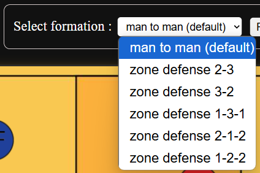

Final Project Reflection and Critical Analysis
Introduction
This project explores the design and development of an interactive basketball strategy tool built with HTML, CSS, JavaScript, and Konva.js. The tool allows users to simulate offensive and defensive plays using drag-and-drop mechanics and visual markers, aiming to enhance strategic understanding through intuitive, game-inspired interaction design.
Judgments of Purpose
As a sport lover and especially basketball, I always enjoy exploring different aspects of the game and the thing I focus on the most is how the game is operated. Because of that, in this project, the primary purpose was to create an interactive and intuitive platform for visualizing basketball plays-bring the theoretical aspect of this sport to everyone. I wanted all users, not only those with expertise like coaches, players but also everyone who is new to basketball to simulate offensive and defensive strategies or even create their own plays by moving players and the ball on a virtual court. The interface supports the experience of drag-and-drop and draws different arrow variants on players path for separate actions to create a play.
Judgments of Worth
The key values besides innovation and novelty were clarity and accessibility, clarity and accessibility. When creating a tool, what users need is to be simple enough and can easily get acquainted. This interface was designed so that even those who do not have any knowledge or experience about basketball can still be interested in-the highlight is the basketball court contains icons that can interact in real time. Basketball is a simple and complex sport at the same time with lots of professional terms. Therefore, the explanation for different terms and reflect fair presentation of both defensive and defensive tactics were also important. Users can slowly discover and go into the tactic aspect of basketball in their own way.
Judgments of Framing
The project was intentionally framed as a browser-based tool using only HTML, CSS, and JavaScript, with the Konva.js library used for canvas-based interactions. Although it is impossible to put complex concepts such as 3D of physical movement, it helped me focus on developing the part I have. From the beginning, the sound for the interface was something I have considered carefully but I realized how the operation of the tool is not closely link with the sound, so I find it is unnecessary. In addition, I also decided not to include a full playbook-saving system and pre-design tactics to keep the scope achievable within the timeframe.
Judgments of Appearance
The visual style pursued minimalist style with simple button highlights and icons help the interface feel more engaging and become accessible for younger and color users. The color of the pith and the player was carefully selected to both highlight the players as well as show the opposition between the two teams. For tactical clarity, players were displayed with two contrasting colors and the ball was distinct in size and style.
Arrows were designed to somewhat simulate the action to be performed and has different colors to distinguish that action by which factors are performed.
In this part, I also removed some of the arrow variants, the most typical is the idea of moving the ball and the player at the same time as the Zic Zac arrow. I could not do this because the Zic Zac drawing algorithms were too complex when sometimes it did not go properly where I want and moving two icons at once was also too confusing.
Judgments of Quality
On a technical level, I chose to use Konva.js for it ease in handling drag-and-drop objects, layered graphics and shape animations. The arrow drawing and formation choosing functions were brought by the optimization of the library in processing and reading information. I also implemented move history tracking to support multiple actions: undo, leave clone behind and animation. I avoided more complex tools and focused on interaction design.
Judgments of Composition
The layout and user interface were carefully composed to maintain balance between function and space although I did not do everything perfectly when I did not calculate the difference when the interface was displayed on a larger screen. For the visual part, the court was placed in the middle of the page and had a sufficient ratio to not make the icons inside too confused but also not overwhelming the interactive elements. The players and ball icons in each formation were also considered the position to follow the real-life tactics and still show the difference of each formation. Visual balance was maintained through the logical arrangement of interactive elements, which was each group of relevant button or bar was stand side by side.
For the interaction, I want to have a balanced experience between the veteran and the newbie. Users may not know anything about basketball but still feel interested in moving the icons around and seeing the animation. For those who are knowledgeable, the interface also has support tools like choosing between different formation and action to take the experience to another level.
Judgments of Navigation
During development, I prioritized interaction design first because I understand this is the most crucial part of my project. I focused on the user interaction experience so I spent time developing and testing on each function: drag-and-drop, drawing movement path and animation to work properly the way I want. That was the reason I removed the complex features to avoid feature creep and ensure a polished core experience. The UI feedback-like highlighting the active tool mode was also a key part of the project to enhance navigation and reduce user confusion. This helps users understand what they can do with interface without being overwhelmed with too much information.
Conclusion
Through iterative design and technical refinement, the project successfully balances usability, visual clarity, and tactical depth. Strategic judgments evolved over time, prioritizing simplicity and interactivity. The result is a practical, visually engaging tool for basketball planning that reflects thoughtful design decisions across appearance, purpose, navigation, and user experience.